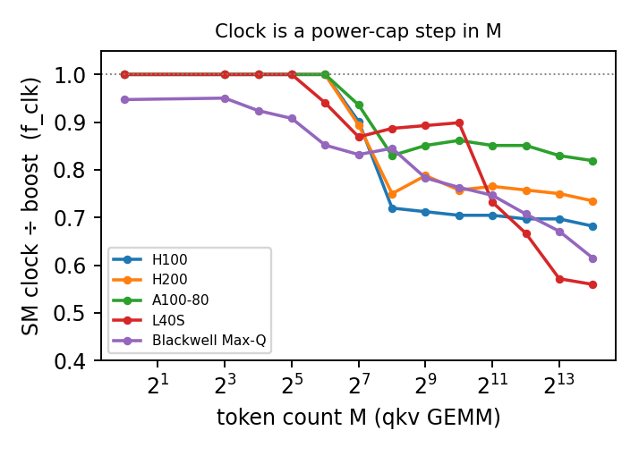
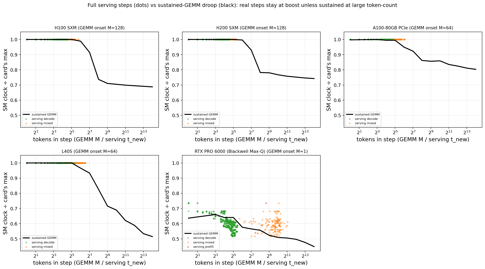
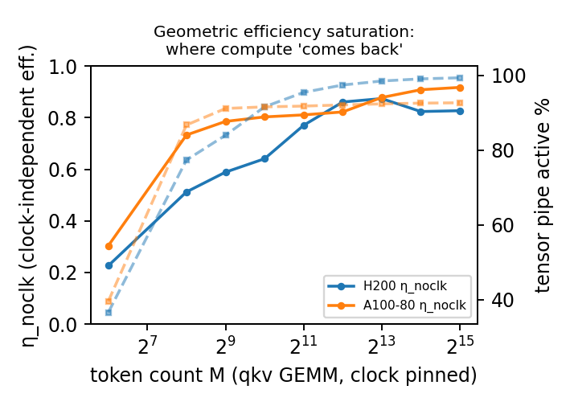
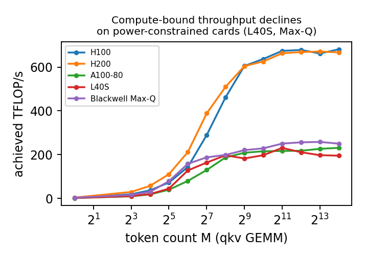
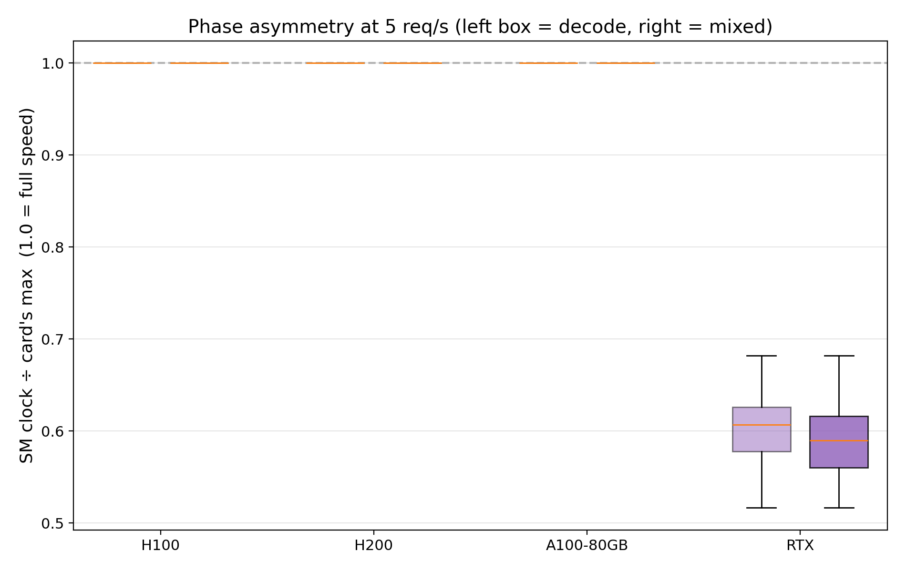

1. The observation, and why a latency predictor must care
A per-step serving-latency predictor estimates how long one engine step takes from the batch composition and the input-token count. Analytical roofline predictors (e.g. GenZ, LLMCompass) evaluate their compute term at the GPU's rated boost clock, treating that clock as a fixed constant of the hardware. The measurements below show that this assumption is false in exactly the regime that capacity planning cares about: under sustained compute load the SM clock is not constant — it droops, and the predictor that ignores the droop systematically under-predicts compute-bound steps.
Two questions follow, and they are the two studies on this page. Study A: can the droop be captured as a closed-form function of the input-token count M, so a predictor can carry it as one extra term? Study B: what it correlates with physically — and does that correlation let us reason about when the term matters? The data answers both, and ties them together: the droop coincides with the GPU reaching its board power cap.
2. Study A — the droop is a clean closed-form function of M
We sweep the input-token count M from 1 to 16384 through the four Llama-3.1-8B projection GEMMs (qkv, o, gate_up, down) and record the median SM clock at each point, on each GPU class. Normalising by the rated boost clock gives a clock fraction. On the three datacenter cards (H100/H200 SXM and A100-80 PCIe) the fraction holds at 1.0 while M is small, then falls through a sharp soft-step to a floor between 0.70 and 0.82. A three-parameter soft-step — floor, midpoint M0, sharpness k — fits the measured fraction with R²=0.999 (H100), 0.995 (H200), and 0.975 (A100-80 PCIe).

| GPU | boost (MHz) | floor (frac) | M0 | k | R² | droop at M=16384 |
|---|---|---|---|---|---|---|
| H100 SXM | 1980 | 0.697 | 161 | 3.94 | 0.999 | −31.2% |
| H200 SXM | 1980 | 0.757 | 158 | 4.23 | 0.995 | −25.8% |
| A100-80 PCIe | 1410 | 0.820 | 153 | 1.28 | 0.975 | −19.7% |
| RTX PRO 6000 (Max-Q) | 2280 | 0.56 | 4 | 0.30 | 0.68 | −38.5% |
3. Why the clock drops — the board power cap (Study B)
The droop is not arbitrary: it coincides tightly with the board reaching its power cap. As M grows the GEMM draws more power; on H100 the averaged draw climbs from ~430 W at M=1 to the 700 W board cap by M≈256, then pins there (698–699 W) for every larger M. The clock falls through that same window — consistent with the DVFS controller lowering frequency to hold power at the cap. We report this as a correlation, not a proven cause (clock-vs-power/cap r = −0.48 to −0.76 across the datacenter cards, strongest on H100/H200): establishing causation would need a controlled power-cap sweep, which requires root (see §6). The relationship is also not a clean threshold — about 10 of 260 GEMM cells sit at the cap without a clock drop (7 of them A100), and one Max-Q cell droops below 90% of cap; this is detailed in the mechanism subsection below.

| GPU | board cap | peak draw | % of cap reached |
|---|---|---|---|
| H100 SXM | 700 W | 700 W | 99.9% |
| H200 SXM | 700 W | 695 W | 99.3% |
| A100-80 PCIe | 300 W | 303 W | 101.1% |
| RTX PRO 6000 (Max-Q) | 300 W | 300 W | 100.0% |
What governs the clock: the power cap dominates at high load (not a clean threshold)
Across our experiments one factor dominates the SM clock at high load: as sustained compute drives the board toward its power cap, the clock falls. The clock is set by an on-chip power/thermal controller (NVIDIA GPU Boost) that keeps the highest clock satisfying the power cap, the thermal limit, and the voltage-frequency reliability envelope — whichever binds first. Crucially the cap limits the board's average (not instantaneous) power, so it responds to sustained load rather than a single brief kernel (NVIDIA power/DVFS documentation). This is a dominant pattern, not a clean threshold: of the 260 GEMM cells, about 10 sit at ≥97% of cap without drooping (the knee, where the cap is just being reached) and one — the Max-Q card — droops below 90% of its cap, so some other board/firmware limit binds first there (we cannot disambiguate the Max-Q limiter from these logs). The exceptions are tabulated in numbers.json; the figure below shows the overall trend.
The data show the pattern directly. A sustained GEMM at the largest M pins each board at ~99–100% of its cap and the clock droops; light 5 req/s serving keeps the datacenter cards at 44–53% of cap (H100/H200) and the clock stays at boost.
Scope: Study A, the validation, and the asymmetry analysis use the four ncu-validated SKUs (H100/H200/A100-80 PCIe/Blackwell); this mechanism section additionally includes L40S (frequency-only), for five SKUs / 260 GEMM cells / 20.9k serving steps total.
| GPU | cap | sustained GEMM @max M (power / clock) | serving 5 req/s (power med–max / clock) |
|---|---|---|---|
| H100 SXM | 700 W | 698 W (100%) → 0.69× | 350–368 W (50–53%) → 1.00× |
| H200 SXM | 700 W | 692 W (99%) → 0.74× | 306–321 W (44–46%) → 1.00× |
| A100-80 PCIe | 300 W | 297 W (99%) → 0.80× | 265–299 W (88–100%) → 1.00× |
| L40S | 350 W | 350 W (100%) → 0.51× | 289–303 W (82–87%) → 1.00× |
| RTX PRO 6000 (Max-Q) | 300 W | 300 W (100%) → 0.45× | 300–304 W (100%) → 0.60× |

Why the same kernel droops when sustained but not in a brief step
This explains most of the apparent contradiction (the GEMM microbenchmark droops, yet full serving steps do not). It is not that some kernels droop and others do not — it is the same power-cap mechanism under different sustained power, and A100-80 PCIe is a useful contrast. Its sustained GEMM at 297 W (99% of the 300 W cap) droops to 0.80×; its serving steps reach a similar reported telemetry power (299–300 W max, ≈100% of cap) yet stay at 1.00×. Similar telemetry power, yet sustained droops and brief does not — which suggests it is the sustained/averaged draw that matters: the power cap limits the board's average (not instantaneous) draw, so a brief high-power step averaged with surrounding low-power decode never drives the average to the cap. A controlled power-cap sweep would be needed to prove the control-loop mechanism. Figure 4 shows this on the token axis: real serving steps sit at small token-counts in the boost region; only a step sustained at a large token-count reaches the droop.

Temperature is a collinear indicator, not the cause here
In this regime the binding constraint is the power cap, not temperature. Median serving temperatures stay at 42–61 °C and sustained GEMM at 63–77 °C — well below the ~85 °C thermal limit. The clock-vs-temperature correlation (r = −0.47 to −0.81 per GEMM cell) arises because temperature and power both rise with the same load; it is collinearity, not thermal throttling. The one case where serving itself droops, Blackwell Max-Q, is not a different mechanism — its 300 W cap is simply low enough that light decode serving already sits at 100% of it.
How this connects to the literature
This is exactly the mechanism the cloud-power literature describes and exploits. POLCA (Patel et al., ASPLOS 2024, arXiv:2308.12908) and Maliakel et al. (arXiv:2501.08219) report that compute-bound prefill drives the board to its power cap while memory-bound decode does not; the 'Illusion of Power Capping' study (Ma et al., arXiv:2605.11999) shows decode on a 700 W H200 draws only 137–300 W, so the cap never binds in decode — precisely our serving observation. The roofline-DVFS line (Nugteren et al., ADAPT 2014) is the origin of 'memory-bound → low power → drop the core clock.' Where we differ: the DVFS-for-serving systems that treat frequency as a control action — throttLL'eM (HPCA 2025, arXiv:2408.05235), DynamoLLM (HPCA 2025, arXiv:2408.00741), VoltanaLLM (arXiv:2509.04827), GreenLLM (arXiv:2508.16449) — all set the clock as a commanded set-point and assume the GPU delivers it. None models the involuntary droop the power cap imposes as a function of sustained input load. That involuntary droop, predictable from sustained power versus the cap, is what our per-step term supplies — and what an SLO-aware scheduler running under a power cap would need to stay correct on long, prefill-heavy steps.
4. Why a boost-clock roofline pays for the droop
Start with a fact that corrects an intuitive guess. Even though the clock droops, achieved TFLOP/s does not collapse — on the datacenter cards it rises with M and plateaus near peak. The reason is a cancellation. Write the compute efficiency as a product, η_c = f_clk × η_noclk: a run-state clock factor (sustained clock ÷ boost) times a clock-independent geometric efficiency (SM-fill × tile-tail × tensor-pipe duty). As M grows, η_noclk climbs — on H200 it rises from 0.23 to 0.87 as the tensor pipe goes from 37% to 99% active — and that rise offsets the one-time clock step. The clock is paid once, at the memory→compute crossover; past it, the still-rising geometric efficiency carries throughput up.

Now the cost to a model. For a fixed kernel shape, throughput is proportional to clock — the same tiling and instruction mix, just slower. So a datasheet-boost roofline (a GenZ- or LLMCompass-style model) over-predicts compute-bound throughput by 1/f_clk and under-predicts the GEMM time by (1 − f_clk). Over the compute-bound sizes that is a 1.22× over-prediction on A100-80, 1.36× on H200, 1.47× on H100, 1.79× on L40S, and 1.63× on the Max-Q Blackwell. In Figure 5 the dotted line is the boost-clock counterfactual (measured ÷ f_clk); the gap above the solid line is exactly the throughput the power cap removed.
The hidden term becomes directly visible on power-constrained cards. Once η_noclk saturates there is no geometric headroom left to mask the clock, so if the cap keeps the clock drooping, achieved throughput goes down. At a fixed cap, L40S sheds 15% of its peak TFLOP/s by the largest size we test (231 → 195) and the Max-Q Blackwell 3% (258 → 250), while the well-provisioned H100 and A100 simply plateau. This is a compute-bound regime — arithmetic intensity far above the ridge — so the decline is the clock, not memory bandwidth.
This is why the droop is a hidden term, not an absent one. A predictor that fits its efficiency constant from on-device measurements absorbs f_clk into that constant and shows no error here — but the constant is then tied to this power cap and thermal state and will not transfer to a different cap or a cooler card. A boost-clock roofline does not absorb it and pays the full 1/f_clk. Either way the clock is the unmodelled variable; making it an explicit factor — one cheap per-GPU clock reading — is what lets a single model span both.

| GPU | compute-bound onset (M) | boost-roofline over-prediction (1/f_clk) | achieved TFLOP/s, peak → max M |
|---|---|---|---|
| H100 SXM | 512 | 1.47× (32% droop) | plateau |
| H200 SXM | 512 | 1.36× (27%) | −0.6% |
| A100-80 | 2048 | 1.22× (18%) | plateau |
| L40S | 512 | 1.79× (44%) | −15% |
| RTX PRO 6000 (Max-Q) | 1024 | 1.63× (38%) | −3% |
5. Phase asymmetry — when the term is dormant
The clock term is not always live, and saying so honestly bounds the claim. Decode steps carry a per-step token count equal to the batch size — small M, in the flat boost region. Prefill steps carry the whole prompt — large M, in the drooped region. We confirm this on real ShareGPT serving at 5 req/s (telemetry is sampled, so 20–32% of steps carry a clock reading; medians are over those): on the three datacenter cards (H100/H200 SXM, A100-80 PCIe) the median clock fraction during both decode and mixed steps is 1.0 — at that light arrival rate even the mixed steps never push M high enough to reach the cap, so the term contributes nothing. (Pure-prefill steps are too rare at this rate to summarise; the regimes shown are decode and mixed.) The term becomes load-bearing only under compute-bound, high-M, prefill-heavy operation. The exception is the Blackwell Max-Q workstation card, which runs at 0.59–0.61 of boost throughout — it is power/thermally constrained even at light load.

6. Limitations and what a controlled sweep would add
- …
- …
- …
7. Relation to prior work, and what is new here
That the SM clock droops under power and thermal pressure is established background: the NVIDIA GPU Boost control loop, the GPUWattch and AccelWattch power models, and Guerreiro et al.'s multi-domain voltage-frequency model all describe it. Jia et al.'s Turing-T4 dissection is the closest microbenchmark analogue — it documents the clock falling as cuBLAS GEMM size grows under the power cap. At the datacenter level, POLCA (ASPLOS 2024) shows compute-bound prefill driving the GPU to its power cap while memory-bound decode does not, and Maliakel et al. quantify the same prefill-sensitive, decode-insensitive asymmetry by sweeping frequency. None of this is ours to claim, and we do not.
What is new is the placement. The DVFS-for-serving line (throttLL'eM, GreenLLM, EcoInfer) treats the clock as a knob the system sets and feeds in as a known input; the general serving predictors (Vidur, LLMCompass, GenZ, LIFE) omit it and evaluate at a fixed clock. The closest predictor — Imai et al.'s roofline-plus-ML method — sees the resulting residual and attributes it to opaque 'cloud variability,' never identifying the SM clock as the cause. This page does the missing thing: it models the involuntary, input-token-driven droop as a closed-form term inside the per-step predictor (Study A), grounds it in the observed M/power-cap correlation so it can be approximated without live telemetry (Study B), shows ignoring it costs up to 31% on compute-bound steps (validation), and bounds where it matters (asymmetry).